بلع الباريومBarium swallow
عملي · م02 · 1.9 دقيقةأقسام المحاضرة (5)
هدف المحاضرةOur Goal
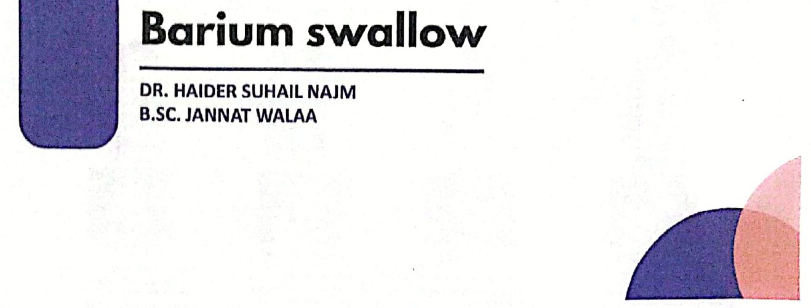
Our goal in this part of the lecture is to apply the esophageal examination and learn the following :
هدفنا في هذا الجزء من المحاضرة تطبيق فحص المريء وتعلّم ما يأتي:
- 1. Indicationsدواعي الاستعمال.
- 2. Contraindicationsموانع الاستعمال.
- 3. Patient Preparationتحضير المريض.
- 4. Techniquesالتقنيات.
مادة التباينContrast
مادة التباينContrast:
E-Z HD 200%–250% or Baritop 100% w/v, 100 mL (or more, as required)
E-Z HD بتركيز 200%–250% أو Baritop بتركيز 100% وزن/حجم (w/v)، 100 مل (أو أكثر، حسب الحاجة).
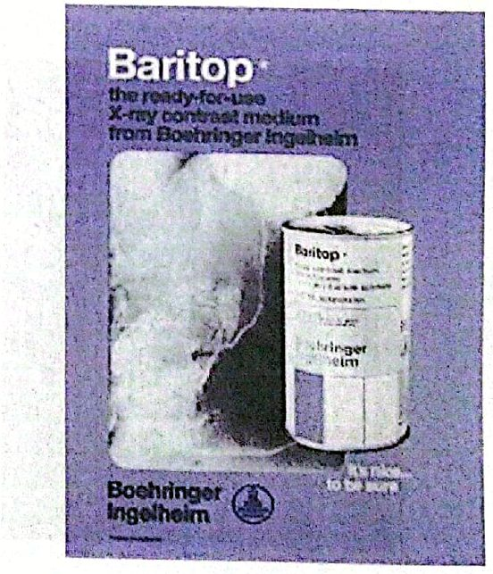
وضعيات المريض في الفحص الشعاعيPatient Positioning for Radiographic Examination
وضعيات المريض في الفحص الشعاعيPatient Positioning for Radiographic Examination
Films are exposed in erect position RAO, LAO, frontal and lateral views.
تُؤخذ الصور والمريض في الوضع القائم: RAO وLAO والمنظر الأمامي والجانبي.
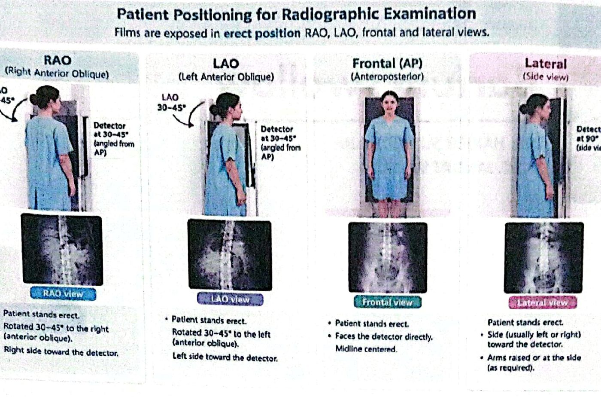
منظر RAO (المائل الأمامي الأيمن)RAO (Right Anterior Oblique)
- • Patient stands erect.المريض واقف بوضع قائم.
- • Rotated 30-45° to the right (anterior oblique).مُدار 30–45 درجة إلى اليمين (مائل أمامي).
- • Right side toward the detector.الجانب الأيمن باتجاه الكاشف.
منظر LAO (المائل الأمامي الأيسر)LAO (Left Anterior Oblique)
- • Patient stands erect.المريض واقف بوضع قائم.
- • Rotated 30-45° to the left (anterior oblique).مُدار 30–45 درجة إلى اليسار (مائل أمامي).
- • Left side toward the detector.الجانب الأيسر باتجاه الكاشف.
Detector at 30-45° (angled from AP)
في الوضعيتين المائلتين الكاشف بزاوية 30–45 درجة (مائل عن AP).
المنظر الأمامي Frontal (AP)Frontal (AP) (Anteroposterior)
- • Patient stands erect.المريض واقف بوضع قائم.
- • Faces the detector directly.يواجه الكاشف مباشرةً.
- • Midline centered.التمركز على الخط الناصف.
المنظر الجانبيLateral (Side view)
- • Patient stands erect.المريض واقف بوضع قائم.
- • Side (usually left or right) toward the detector.الجانب (عادةً الأيسر أو الأيمن) باتجاه الكاشف.
- • Arms raised or at the side (as required).الذراعان مرفوعتان أو بجانب الجسم (حسب الحاجة).
Detector at 90° (side view)
في المنظر الجانبي الكاشف بزاوية 90 درجة (منظر جانبي).
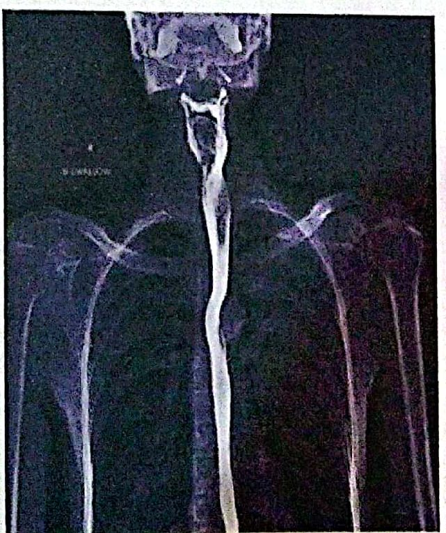
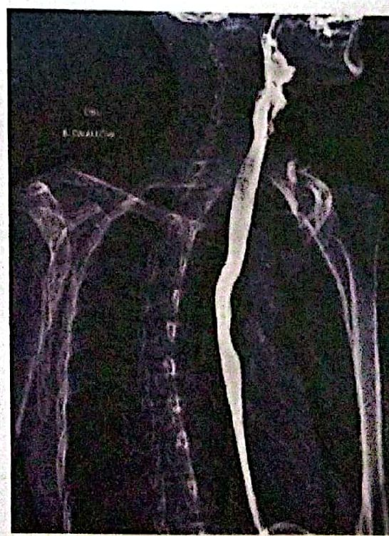
موجودات المريء (1)Esophageal Findings (1)
تعذّر الارتخاء (الأكالازيا)Achalasia
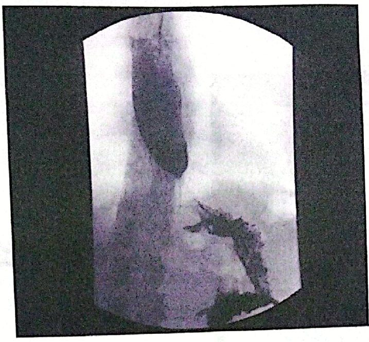
التضيّقstricture
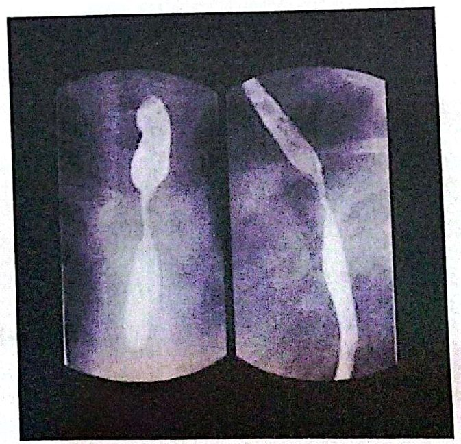
تشنّج المريءEsophagael spasm
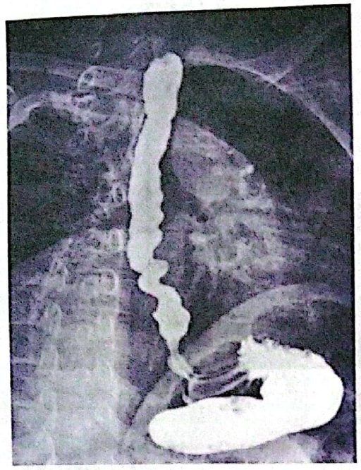
علامة ذيل الفأرRat-tail- sign
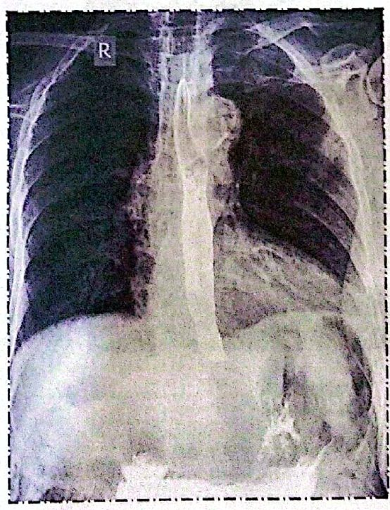
الناسور الرغامي المريئيTracheo-esophageal- fistula
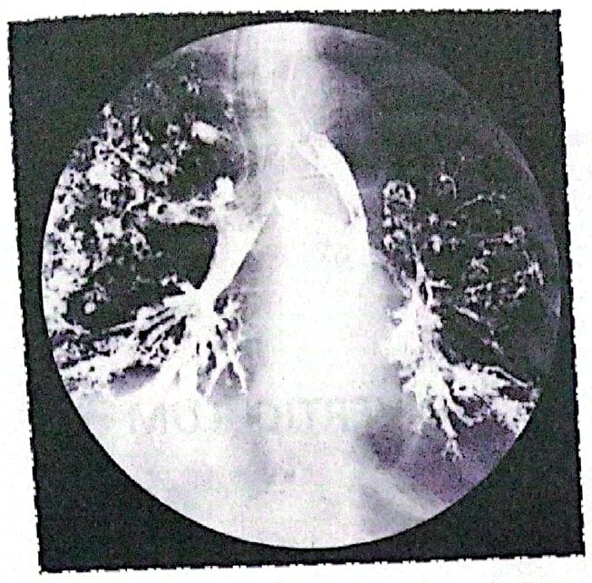
موجودات المريء (2)Esophageal Findings (2)
رتج زنكرZenker diverticulum
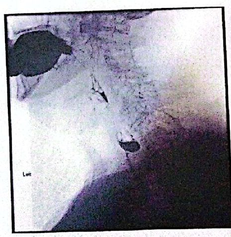
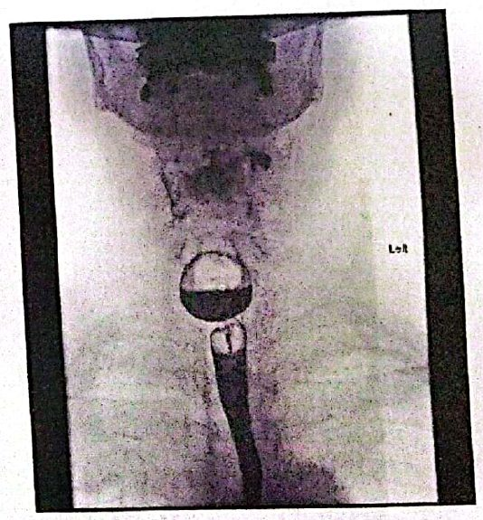
الرتجDIVERTICULUM
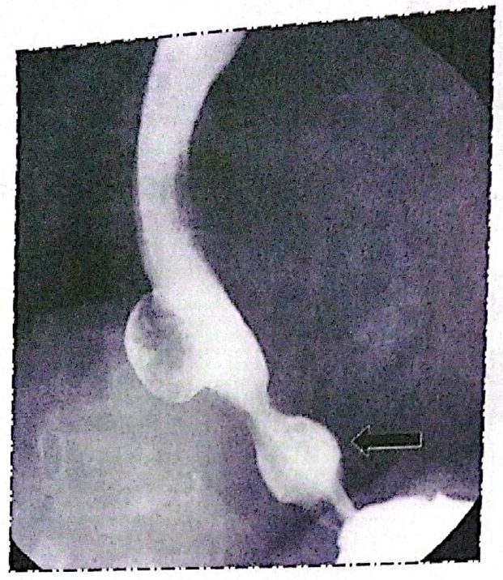
جسم غريبForeign body
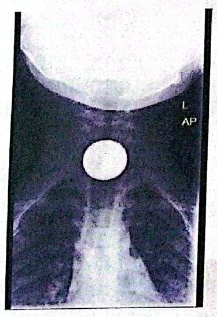
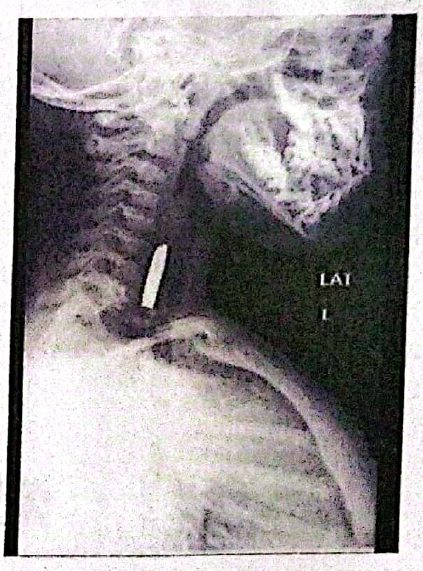
مريء باريتBarrett oseophagus
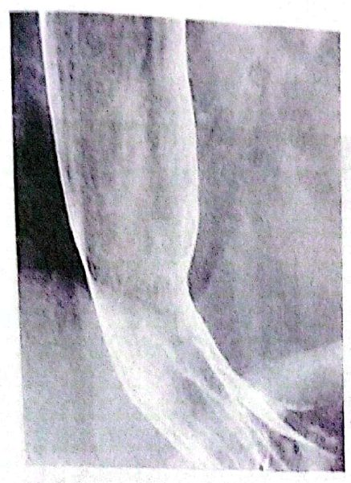
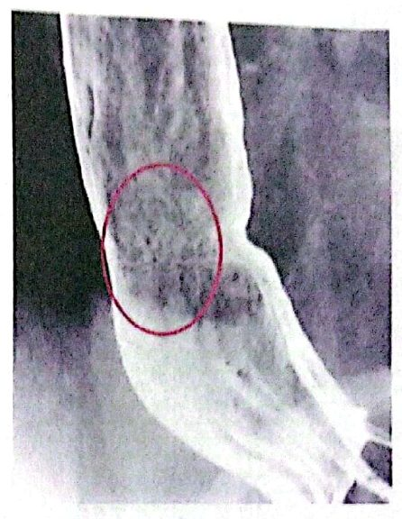
سرطان المريءOseophageal carcinoma
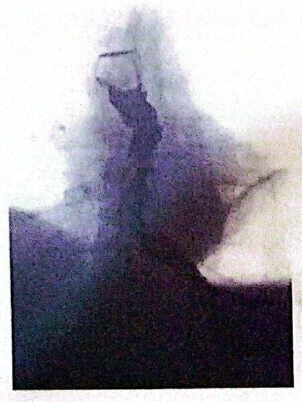
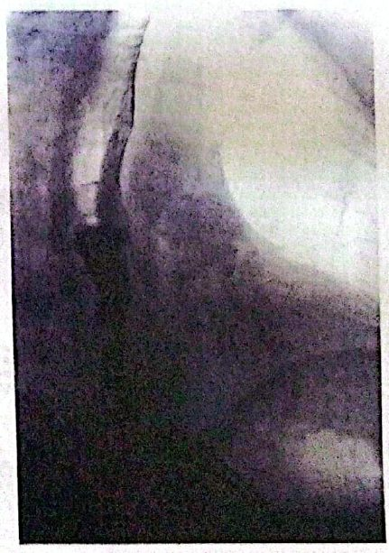
التهاب المريءoseophagsitis
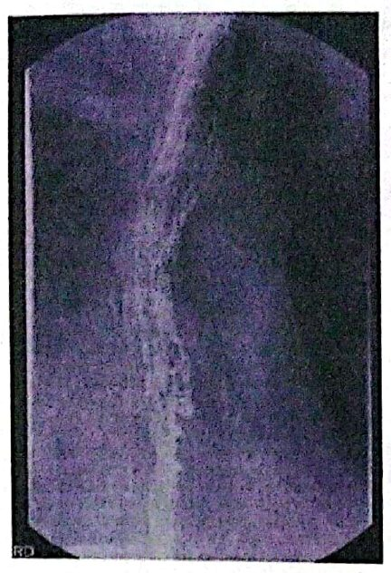
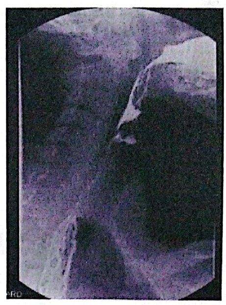
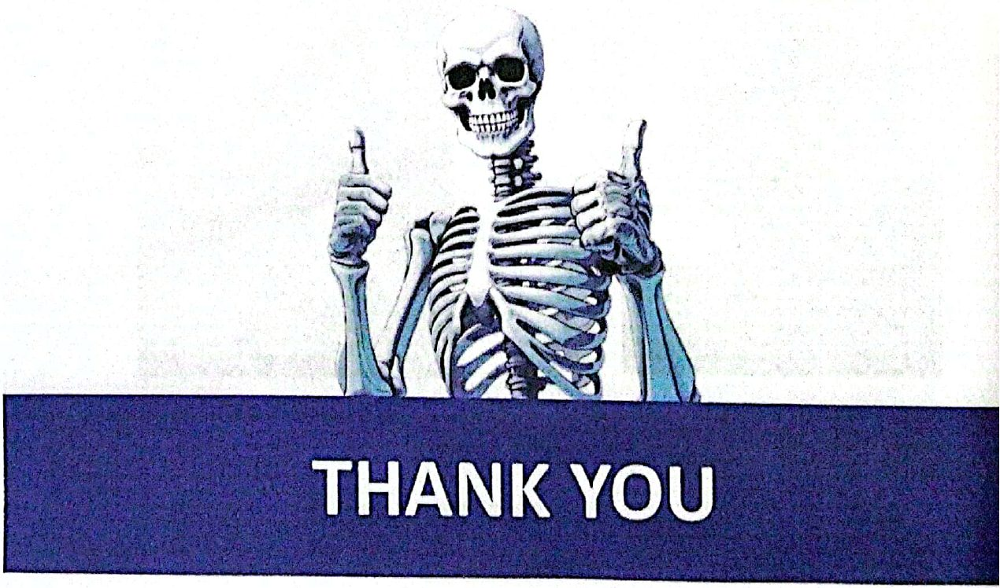
المحاضرة مسموعة
نص الأستاذ بالإنكليزي مثل الأصل · 1.9 دقيقة. اضغط أي جملة تسمعها، أو مصطلح منقّط تسمع لفظه ومعناه.
Our Goalهدف المحاضرة
Our Goal
Our goal in this part of the lecture is to apply the esophageal examination and learn the following :
Indications
Contraindications
Patient Preparation
Techniques
Contrastمادة التباين
Contrast
Contrast:
E-Z HD 200%–250% or Baritop 100% w/v, 100 mL (or more, as required)
Patient Positioning for Radiographic Examinationوضعيات المريض في الفحص الشعاعي
Patient Positioning for Radiographic Examination
Patient Positioning for Radiographic Examination
Films are exposed in erect position RAO, LAO, frontal and lateral views.
RAO (Right Anterior Oblique)
Patient stands erect.
Rotated 30-45° to the right (anterior oblique).
Right side toward the detector.
LAO (Left Anterior Oblique)
Patient stands erect.
Rotated 30-45° to the left (anterior oblique).
Left side toward the detector.
Detector at 30-45° (angled from AP)
Frontal (AP) (Anteroposterior)
Patient stands erect.
Faces the detector directly.
Midline centered.
Lateral (Side view)
Patient stands erect.
Side (usually left or right) toward the detector.
Arms raised or at the side (as required).
Detector at 90° (side view)
Esophageal Findings (1)موجودات المريء (1)
Esophageal Findings (1)
Achalasia
stricture
Esophagael spasm
Rat-tail- sign
Tracheo-esophageal- fistula
Esophageal Findings (2)موجودات المريء (2)
Esophageal Findings (2)
Zenker diverticulum
DIVERTICULUM
Foreign body
Barrett oseophagus
Oseophageal carcinoma
oseophagsitis
19 سؤال من نص المحاضرة، ويّا «ليش صح» بعد كل جواب.
ابدأ الاختباراضغط أي مصطلح منقّط تسمع لفظه ومعناه.
PDF ثنائي اللغة: نص الأستاذ + الترجمة + الخلاصة + الأسئلة · 2.5 MB
تحميل الملف